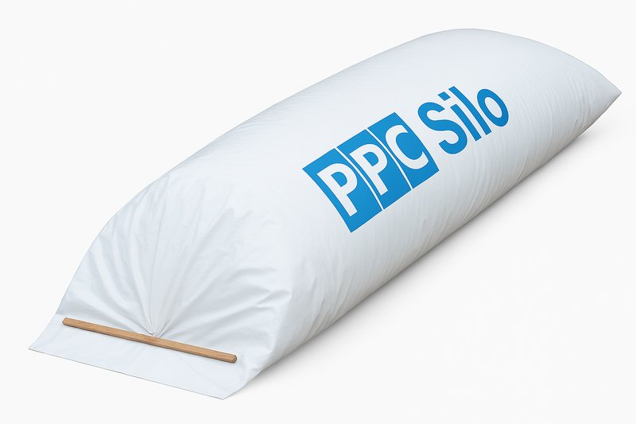
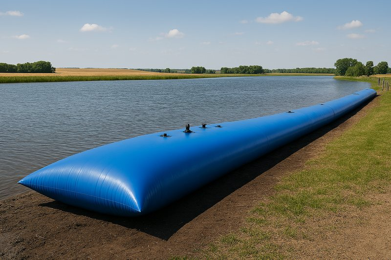
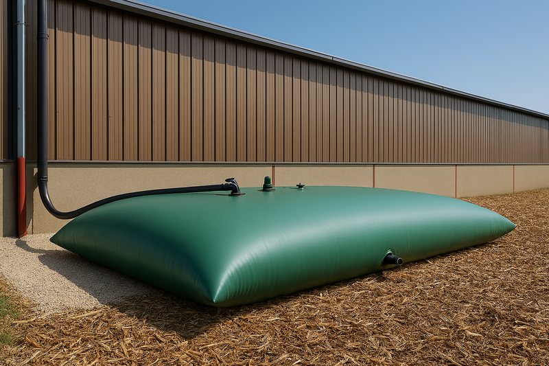
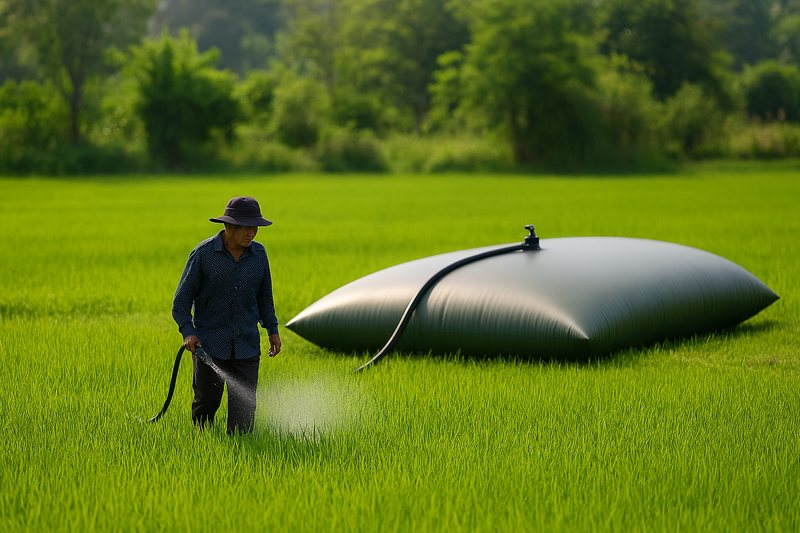
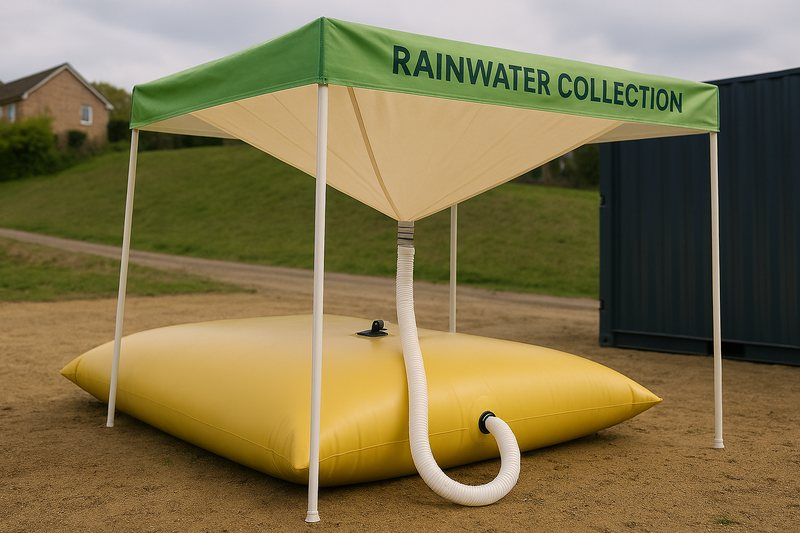
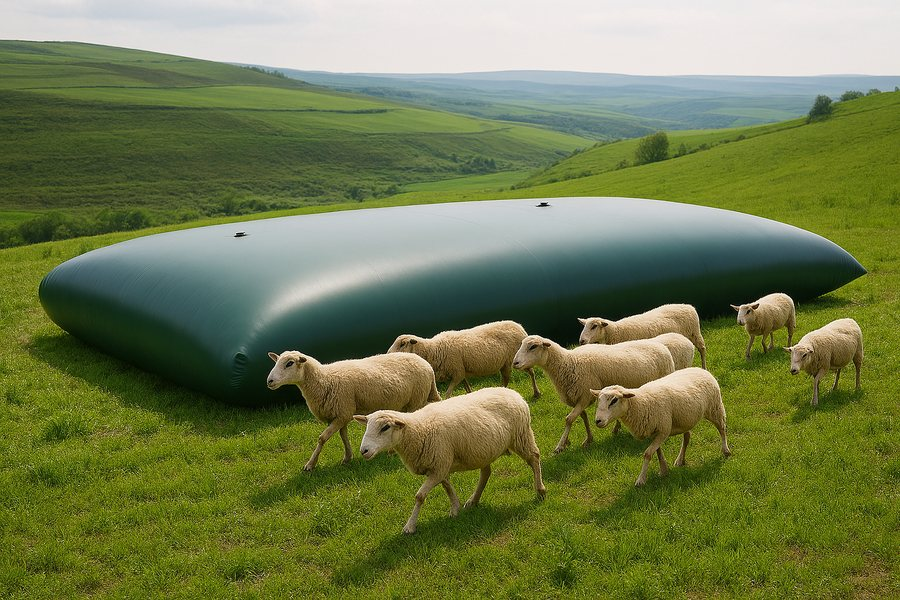
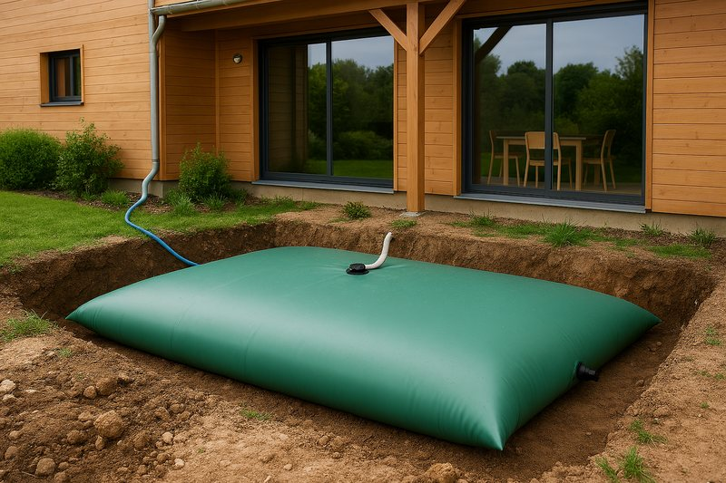
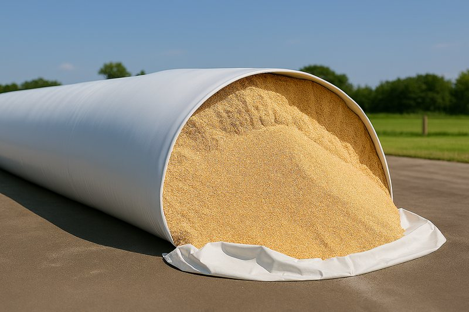

New product line
Bladder Tanks & Agriculture
From source to storage, liquid protection you can trust. Flexible storage for water, fuel, effluent and fertiliser — built on the same materials engineering behind our flexitank range.
Overview
Our newest product family — announced June 2026
Bladder tanks and silo bags extend our flexible packaging expertise beyond shipping containers into on-site storage: agricultural water and fertiliser, construction effluent, fire reserves and emergency flood response. As a newly-launched line, full technical specifications and capacity ranges are confirmed with our technical team on a per-application basis.
If you're evaluating this product for a specific application, our team can talk through material selection, expected capacity and lead time before you commit to a specification.

Applications
Six ways we're already seeing this used

Fertiliser storage
Flexible bulk storage for liquid fertiliser on farm.
Fire reserve
On-site emergency water reserves for fire protection.
Flood barriers
Rapid-deploy flood defence for emergency response.

Rainwater harvesting
Collection and storage for irrigation or non-potable use.

Livestock water
Portable water storage for grazing livestock.

Domestic & garden
Smaller-scale water storage for households and smallholdings.
Benefits
Built on 57 years of flexible packaging engineering
Same manufacturing standard
Produced in the same ISO 9001/14001/22000-certified facilities as our flexitank and dry bulk liner ranges.
Flexible & portable
Deploys where rigid tanks can't — ideal for temporary, seasonal or emergency storage needs.
Responsible materials
Manufactured under the same ISO 14001 environmental management system as the rest of our range.
Direct technical support
As a new product line, every enquiry is handled personally by our technical team, not a generic order form.
Gallery
Bladder tanks & silo bags

FAQs
Bladder tank FAQs
Related products
You may also need


Curious whether a bladder tank fits your application?
Tell us the liquid, volume and site conditions — our technical team will talk it through with you directly.